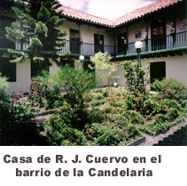
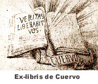
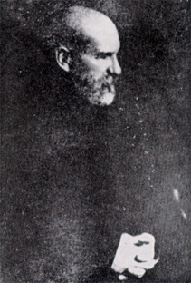
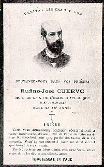
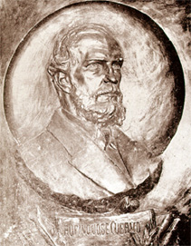

BIOGRAFÍA DE RUFINO JOSÉ CUERVO
1.1. Su familia y primeros años
1.3. Finanzas e industrias familiares
1.5. Cuervo librero y bibliógrafo
3.2. Muerte de Ángel y Rufino José Cuervo
3.3. Quehacer filológico en París
3.3.3. Cuervo crítico lexicográfico
3.3.4. Cuervo y su epistolario
4. Bibliografía de R. J. Cuervo.
5. Cronología de R. J. Cuervo y el DCR (Enlace a la Historia del DCR)

La figura de Rufino José Cuervo debe quedar plasmada con letras de oro en nuestra historia, no sólo por su peculiar personalidad, sino por su destacada labor científica y filológica. Es un caso, único e irrepetible, paradigma de tenacidad, constancia, trabajo incesante y producción sin descanso; modelo de estudio, de sacrificio, de humildad y de modestia.
Don Rufino José Cuervo Urisarri nació en la calle de La Esperanza del antiguo barrio de La Catedral (hoy La Candelaria) de la vieja y fría Bogotá, el 19 de septiembre de 1844. Por aquella época la colonial ciudad apenas si contaba con una población de cincuenta mil vecinos. Sus padres, Rufino Cuervo y María Francisca Urisarri, eran ambos descendientes de emigrantes españoles.
1.1. SU FAMILIA Y PRIMEROS AÑOS
Su padre, el doctor Rufino Cuervo Barreto, natural de Tibirita, Cundinamarca, fue una figura eminente de su época: periodista y abogado, político y gobernante, diplomático y hombre de letras. Su retrato aparece en la galería de los presidentes colombianos puesto que ocupó como vicepresidente la primera magistratura en ausencia del titular, el General Tomás Cipriano de Mosquera. Fue candidato para el siguiente período y fácilmente hubiera sido el presidente si el Congreso no se hubiera visto obligado a votar por López.
El profesor Fernando Antonio
Martínez describe así al padre de nuestro filólogo: “El doctor Rufino Cuervo
(1801-1853), padre de Rufino José, fue en el siglo pasado uno de los personajes
más

Por la rama materna, descendía don Rufino José de una familia vascongada, noble en la mejor acepción de la palabra. Fue su madre, doña María Francisca Urisarri, una mujer admirable que en la buena y mala fortuna supo mantener el decoro de un hogar ejemplar. Tenía fama de ser una matrona distinguida por su piedad, su modestia, su talento, su trato admirable. El matrimonio Cuervo‑Urisarri tuvo 7 hijos: Antonio María, Luis María, Ángel María, Antonio Basilio, Ángel Augusto, Carlos Nicolás y Rufino José.
Si queremos conocer el género de educación que el doctor Cuervo quería para sus hijos, como si fuera visionario de la situación actual, veamos las instrucciones que sobre la materia dejó a su esposa, antes de viajar a Europa en 1835: “Si yo muriese, tú tienes el deber de educarlos: pónlos en una pensión o casa de educación, recomendando con particularidad que aprendan los principios de moral y de religión, la gramática castellana, la aritmética, el dibujo lineal y una buena escritura; cuida después de que aprendan algún arte u oficio, sea cual fuere, con tal de que tengan una ocupación honesta con que subsistir. No tengo la vana pretensión de que mis hijos ocupen puestos elevados en la sociedad, ni tampoco quiero que sigan con la carrera de la medicina o del foro, como lo están haciendo casi todos nuestros jóvenes. La patria no necesita de muchos médicos y abogados, sino de ciudadanos laboriosos que cultiven los campos, mejoren la industria y transporten nuestros frutos a los mercados extranjeros. No economices gasto ni sacrificio alguno para educar a nuestros hijos: vende lo más precioso que tengas, porque aun cuando no les dejes bienes de fortuna, ellos tendrán siempre lo bastante con la buena educación” (Cuervo, 1987, t.4: 763).
Don Rufino, de acuerdo con las ideas paternas, disfrutó de las delicias del campo en la hacienda paterna de Boyero, en la antigua Serrezuela, hoy Madrid (Cundinamarca). Allí los niños "por vía de juego y ejercicio" reparaban el camino vecinal descompuesto por las lluvias, arreglaban el puente de una acequia que cruzaba el camino, tomaban parte activa en la recolección de los frutos, ordeñaban las vacas, "pisando descalzos la escarcha o andando por el agua, sin que nos hiciese impresión alguna" (Cuervo, 1978, t.4: 726).
El profesor Fernando Antonio Martínez inicia el estudio preliminar de las Obras de Cuervo diciendo: “Nada, aparentemente, pudiera haber hecho creer que llegaría a destacarse con perfiles tan recios, casi heroicos, como los que la posteridad le ha reconocido. Hijo de una época de trastornos sociales y políticos y crecido en una atmósfera impropicia de hecho a la meditación y al estudio, todo pudiera hacer pensar que el que después había de ser uno de los grandes filólogos del siglo XIX, difícilmente lograría superar las contingencias de la historia, el ambiente y la educación dominantes en su patria. Sin embargo, así fue. Y este esfuerzo solitario y desmesurado debe reconocerse como una de las virtudes del hombre que, venciendo los obstáculos más diversos, encarnó y transformó la sabiduría de su tiempo, dentro de las fronteras de su tierra, y la conformó a criterios y normas plenamente científicos” (Martínez, 1954: xiii).
Recibió don Rufino las primeras lecciones en su hogar, bajo la tutela de su propio progenitor. El padre, prematuramente muerto en 1853, cuando contaba tan solo con cincuenta y dos años y su hijo menor, Rufino José, escasamente nueve, le había enseñado los elementos de la geografía y gramática. Sus biógrafos nos señalan que su despierta inteligencia y sed de saber lo llevaron a asimilar como nadie conocimientos nada comunes en jóvenes de su época. Estudió en el Liceo de Familia, colegio fundado en Bogotá por su hermano Antonio Basilio y el presbítero Antonio José Sucre; en dicho plantel, estos dos directores hicieron una verdadera revolución didáctica: adoptaron a Bello para la enseñanza del castellano y a Burnouf para la lengua latina. Entre los jóvenes discípulos se contaban Rufino José Cuervo y Miguel Antonio Caro. Don Rufino José también frecuentó las aulas del Colegio de don Santiago Pérez y las del Colegio de San Bartolomé de los padres jesuitas. El estudio de los idiomas extranjeros tendría para él una gran importancia: con los profesores franceses Bergeron y Touzet aprendió francés y contabilidad mercantil (Cuervo: 1954, t. 2: 1332).
Pero la formación académica de Rufino José no fue regular ni metódica. No hubo continuidad en sus estudios, ni frecuentó los claustros universitarios, quizás debido a las continuas conmociones políticas del país y la propia situación económica de su familia; pero estas deficiencias se vieron suplidas con creces, gracias a la constancia y a sus grandes capacidades. De acuerdo con el señor Boris Tannenberg, en su artículo Cuervo íntimo, nuestro filólogo: “Realizaba el tipo perfecto de autodidacto. [...] La Gramática latina de Burnouf, la Gramática castellana de Bello y sobre todo la Gramática comparada de Bopp, que conocía a fondo, abrieron la inteligencia de don Rufino a la comprensión de los problemas filológicos y bastaron a encarrilarlo por ellos hasta hacerlo uno de sus más eminentes cultivadores” (Anuario de la Academia Colombiana, t.10: 299-300).
Tenía una sólida formación en filología, lingüística románica e histórica del castellano. Al respecto dice González de la Calle: “La gramática histórica del castellano cimentada en la lingüística románica y ésta, a su vez, en la lingüística indo-europea y en la lingüística general, forman la gradación sistemática reconocida y acatada y potenciada en la formación lingüística universal del famoso maestro bogotano” (González, 1945: 241). Un revisión a fondo de sus diferentes trabajos o un recorrido por su Biblioteca, ubicada en la Biblioteca Nacional de Colombia a petición del propio Cuervo en su testamento, permite saber los libros consultados y leídos por don Rufino para sus investigaciones. En lingüística se encuentran nombres como: Ascoli, Bopp, Bréal, Brinkmann, Dihigo, Grimm, Jespersen, Kelle, Lenz, Meillet, Müller, Passy, Pott, Schuchardt, Sweet, Whitney, entre otros. “Ni los temas fonéticos, ni los morfológicos, ni los etimológicos, ni los sintácticos, ni incluso siquiera los estilísticos carecen de prestigiosa representación en la parte ya registrada de dicha bibliografía [...]”(González, 1945: 229).
Con respecto a las lenguas, el profesor Fernando Antonio Martínez nos dice: “Observamos que en 1871 Cuervo podía argumentar lingüísticamente con el sánscrito, armenio, griego, latín, celta, gótico, islandés, sueco, danés y flamenco, letón, lituano y ruso; dentro de las lenguas románicas con el italiano, portugués, francés y provenzal, sin contar el español, de cuya repartición dialectal muestra precisa información al referir al catalán, valenciano, gallego y mallorquín. Remite, además, al vascuense, y dentro del campo de las lenguas semíticas, al hebreo, al árabe y en alguna ocasión al sirio. Visto panorámicamente, este cuadro (en el que aparecen representados los grupos indo-ario, armenio, helénico, italo‑celta, germano y balto‑eslavo por una parte, y el románico por otra) ofrece una perspectiva muy clara y completa del paisaje lingüístico interior de Cuervo, en el cual, por así decirlo, apenas hay matiz que no pueda distinguirse” (Martínez, 1954:Lxxxiii-Lxxxiv). Otras notas nos avisan de su entendimiento de los idiomas válaco, alemán, malayo, levantino, vasco y algunos dialectos americanos como el caribe, chibcha, mejicano y quichua. (AEC, 20:25).
Don Rufino vivió en un medio en que las letras gozaron de mucho crédito y había inquietud por los estudios filológicos. Hay que recordar que por iniciativa del colombiano Ezequiel Uricoechea se funda en Bogotá la primera filial de la Real Academia Española, en 1871. Además, las primeras publicaciones que hace Cuervo son en compañía de estudiosos de la lengua, colombianos reconocidos, como Miguel Antonio Caro, con quien publica la Gramática latina, y Venancio González Manrique, con quien redacta la Muestra de un diccionario. Además, encontramos personalidades como la del gran amigo de Cuervo, Ezequiel Uricoechea, “quien, aparte de sus grandes logros en los campos de la medicina, la química y la meteorología, fue un lingüista de gran solvencia, autor de gramáticas sobre lenguas aborígenes como la chibcha, la páez y la guajira. Fue él quien le enseñó a Cuervo los primeros elementos de la lengua alemana y ambos aprendieron el árabe en Bogotá” (Moreno-Durán, 1995: 23).
1.3. FINANZAS E INDUSTRIAS FAMILIARES
La opulencia de los primeros años había desaparecido. La muerte temprana del padre, las revoluciones con sus empréstitos forzosos habían acabado con el capital amasado con tanto trabajo y tan acrisolada honradez. Su madre se vio obligada a trabajar para sostener la familia, cosa inusitada en aquella época y menos en una familia acomodada. Ángel también colaboró, con el propósito de mejorar la situación de la familia; esos esfuerzos lo llevaron a buscar en la explotación de sal la salida a su precaria situación económica: “No bien apaciguada la República después del triunfo de Mosquera, se logró que el gobierno abriera la salina de Sesquilé, situada en terrenos que formaban el patrimonio de nuestro hermano Nicolás, el cual se hallaba a la sazón en Inglaterra siguiendo sus estudios”. (Cuervo, 1987, t. 4: 766). Con un grupo de conocidos Ángel decide dedicarse a la explotación de sal en Sesquilé, en el año de 1862.
Pero esta empresa no fue exitosa, debido a que el nivel de exigencia del contrato era bastante alto y por la inexperiencia de los socios en este campo. Las consecuencias, al parecer estaban previstas: “[...] los presupuestos no correspondieron a los gastos, exigiéronse a los accionistas nuevos y nuevos sacrificios, empeñose la empresa, y casi se había perdido la esperanza de sacar algún provecho; hasta que, después de años, elegido director Ángel, repartió dividendos activos a los asombrados socios. Pero tal cosa no convenía a los interesados en aburrirlos; se urdieron intrigas, nombraron otro director, y el que dejaba el puesto vendió a menosprecio las diez acciones que tenía y abandonó el campo después de seis años de la vida más afanosa”. (Cuervo, 1987, t. 4:768). Los hermanos Cuervo se vieron obligados a vender los terrenos y acciones que les correspondían a un precio muy bajo.
“Vuelto [Ángel] a la casa paterna, se encontró con que muchos días no se contaba en ella para comer sino con la miseria que producía la venta de algunas botellas de vinagre que hacía nuestra madre, y él mismo se vio varias veces imposibilitado de salir por carecer de ropa decente”. (Cuervo, 1987, t. 4: 769). Y es en este momento cuando al emprendedor Ángel, a quien Rufino José tanto quería y admiraba, se le ocurre el curioso e insólito proyecto de establecer una fábrica de cerveza, la cual, efectivamente, llegó a funcionar a partir de 1868. Sin tener ningún conocimiento sobre el proceso de fabricación, Ángel se dedicó a estudiar en los libros acerca de este tema y empieza a experimentar hasta obtener un producto aceptable. Los trabajos para montar la fábrica, elaborar el producto, experimentarlo técnicamente y ponerlo en circulación, duraron algo más de un año. Además, la escasez de recursos no les permitía contar con empleados ni obreros suficientes, por lo cual Ángel mismo lavaba botellas y barriles, y demás quehaceres. Cuando empezó a prosperar la empresa, Cuervo deja un poco sus quehaceres y le ayuda a su hermano en estos menesteres. Los hermanos Cuervo conocieron por entonces uno de los aspectos más tediosos del oficio: el cobro de cuentas yendo por las fondas y tabernas, aguardando y volviendo una y más veces.
Carlos Mesa registra la actitud de los vecinos sorprendidos por tan radicales cambios de la siguiente manera: “El vulgo miró aquello con sorpresa, quizá con satisfacción maligna. Recordaba que aquellos dos jóvenes eran hijos de un patricio y a veces pasaba ante la cervecería, diciendo: Vean en lo que han parado los hijos del doctor Cuervo. ¡Cosa curiosa!” (AEC, 20:18).
Debemos mencionar que la pericia de don Ángel no se limitaba a la fabricación de cerveza, también se extendió a la publicidad. Veamos cómo promocionaba la cerveza en un anuncio aparecido el 4 de diciembre de 1871 en El Bien Público: “ROQUE ROCA Y ROQUETE (seudónimo de don Ángel, utilizado además en otros escritos de prensa que redacta en los pocos momentos de descanso que le deja la fábrica) Certifica: Que la Cerveza Porter que se vende a dos reales cada botella en la confitería del señor don Agustín Nieto (Frente a la portería de Santo Domingo), es tan exquisita y confortante como la mejor inglesa. Así, pues, como amigo del mejoramiento social, la recomienda a todos los entecos y anémicos, ofreciéndoles que al poco tiempo de tomarla se pondrán más rubicundos y fornidos que el inglés más jayán. El fabricante tiene certificados de varios caballeros británicos, que acreditan que el Porter inglés no se aventaja al que él ha logrado fabricar a costa de largos estudios y de costosos ensayos” (AEC, 7: xxviii).
El negocio día a día se hacía más próspero y se acreditaba. En 1871, en una exhibición industrial de Bogotá, el producto de la cervecería obtuvo una mención honorífica. Con los beneficios de esta incipiente industria colombiana lograron pagar todas las deudas que tenían, se resolvió la precaria situación de los Cuervo y, años más tarde, los dos hermanos pudieron vivir desahogadamente consagrándose por entero a sus aficiones favoritas: la filología y la literatura. A su madre, doña María Francisca Urisarri de Cuervo, no le estaba reservado en esta vida la satisfacción de ver el triunfo de sus hijos, fruto de la abnegada dedicación materna, que la había llevado a fabricar y vender vinagre para satisfacer las necesidades básicas en la época de las vacas flacas, pues muere el 22 de marzo de 1869.
Ángel continuaba a cargo de la fábrica pues su interés era “quitarle toda clase de preocupaciones [A Rufino José] para que pudiera dedicarse enteramente a sus trabajos científicos”. (Schutz, 1992: 54). Así, a los 23 años encontramos a don Rufino desempeñando cátedras de latín en el Colegio del Rosario y en el Seminario Conciliar. Para desgracia o para fortuna, su paso por el magisterio fue relativamente de muy corta duración, porque si bien la docencia le permitió participar en la redacción del texto de la Gramática Latina, le hubiera quitado valioso tiempo para sus investigaciones. Fernando Antonio Martínez comenta: “Enseñó latín en el Colegio del Rosario en 1867 y en 1868. Profesó la misma asignatura en el Seminario Conciliar primero en 1868, compartida probablemente, además con la lengua griega, y luego en 1870, de latinidad exclusivamente; pero no sabemos si entre estas dos fechas existió alguna interrupción. Que, como se ha dicho, enseñó en el colegio de don Santiago Pérez, se confirma por una carta de éste en que le anuncia a Cuervo que el 15 de junio de 1868 cerrará el establecimiento por no haber podido allanar los inconvenientes que se le presentaban, le da las más cordiales gracias por la colaboración prestada y le remite “lo correspondiente al último mes”. Parece casi seguro que, después de 1870, Cuervo no regentó ninguna cátedra; por lo menos así puede presumirse en vista de las dos cartas de don Ezequiel Uricoechea, ambas de 1871 que suponen una participación de aquél a éste relativa al abandono del profesorado. Por algunas palabras de Fabo parece que Cuervo dio instrucción privada a algunos niños, y Ortega Torres sugiere que el magisterio se ejerció “quizás en algunos otros planteles”. Nada podemos decir con certeza al respecto; señalaremos, sin embargo, que en una carta de Cuervo dirigida a Jorge Holguín, el filólogo llama a la hija del estadista colombiano su “discípula”, cosa que hace pensar si acaso fue profesor en algún colegio femenino” (Martínez, 1954:Lxxviii-Lxxix).
Hemos dicho que su amigo Uricoechea en sus cartas le aconsejaba no dejar la cátedra. Así daba sus consejos en 1871 desde Bruselas a su amigo Cuervo: “No sé qué haga U. pero siento que se haya dejado de la enseñanza. Esto si es que no está con alguna obra entre manos en cuyo caso no digo nada. Sin embargo una o dos horas de clase por día distraen, hacen bien y a más nos suplen. Es necesario estar un poco entre el mundo, en el movimiento y si se aísla uno mucho se vuelve maniático (one sided). No digo nada del colegio, si el lugar no le gusta, dejarlo es lo mejor, pero en alguna otra parte debía continuar sus clases” (AEC, 10: 36-37).
Durante el periodo de 1867 a 1874, empiezan las publicaciones de varias de sus obras, en las cuales venía trabajando de tiempo atrás. En colaboración con M. A. Caro, uno de sus más íntimos amigos, publica en el año de 1867, la Gramática de la lengua latina para el uso de los que hablan castellano. La primera edición de sus Apuntaciones críticas sobre el lenguaje bogotano, que tanta celebridad habían de darle, fue preparada de 1867 a 1872. En 1871 publica con Venancio González Manrique la Muestra de un diccionario de la lengua castellana, que se convierte en semillero de reflexiones sobre la disciplina lexicográfica y el antecedente inmediato de su magna obra. El 29 de junio de 1872 inicia, formalmente, el Diccionario de construcción y régimen de la lengua castellana. En 1874 publica la primera de las catorce ediciones que haría de la Notas a la gramática castellana de don Andrés Bello, con lo que la obra del ilustre venezolano ganó no sólo la elegancia tipográfica que merecía tan importante obra, sino que ganó la precisión conceptual que le imprimiera la sabia mano del maestro colombiano.
1.5. CUERVO LIBRERO Y BIBLIÓGRAFO
Don Ezequiel Uricoechea, don Rufino José Cuervo y don Venancio González Manrique establecieron en Bogotá, en 1869, un negocio de venta de libros que despachaba el primero desde Europa y vendían aquí Cuervo y Manrique. Eran libreros en su domicilio, no tuvieron local. Pero este negocio no prosperó, los pedidos no eran muy grandes, tenían problemas con los intermediarios; finalmente, después de cuatro años resuelven liquidarlo.
Su relación con los libros era muy especial e incluso en los viajes lo acompañaban. En alguna ocasión le comenta a Juan E. Hartzenbusch que son como los buenos amigos: “La buena compañía suele olvidarlo a uno de las incomodidades de una mala posada” (AEC, 20:53). Recordemos que desde 1888 tenía licencia de la autoridad eclesiástica para leer libros prohibidos. ¡Y de qué manera leía! Es frecuente encontrar la expresión Devorar un libro, un artículo, una revista, para caracterizar la fuerza y emoción con que Cuervo se relacionaba con los libros: “No tengo que decir a Vd. que al momento que recibí el Tratado del Gerundio, lo devoré” (AEC, 18:121); “Devoré el Estudio sobre los relativos [...].También leí la Reseña Histórica y en ella con viva satisfacción los discursos de Vd.” (AEC, 18:127). “Ya comprenderá que los artículos que primeramente quise ver fueron los relativos a las notabilidades argentinas; los he devorado” (AEC, 22:54).
A Boris Tannenberg también le impresiona su manera de relacionarse con los libros: “Hay que marcar el amor tierno, apasionado, de don Rufino por los libros. Los amaba, no sólo para leerlos o para consultarlos, sino aún por el sólo placer de manejarlos y saber que los tenía a su alcance. No sabía sustraerse a la tentación de adquirir constantemente aún aquellos más ajenos a sus estudios, como una bella edición de autores griegos. Tenía culto por las bellezas tipográficas y los textos de grandes escritores impresos sin notas sobre papel fino; su gabinete de trabajo y su salón se hallaban atiborrados, y de sus incursiones por las librerías sacaba diariamente paquetes, a despecho del ama de llaves, que admiraba a su señor a la manera que Sancho a don Quijote, y se revolvía por la cocina gruñendo: “¡Habrase visto! ¡Habrase visto!”. Y era tan bueno, tan amigo de ayudar a los demás y de hacerles partícipes de sus riquezas, que les prestaba sus amados libros. Un bibliófilo como él, ¡prestar sus libros! Estoy seguro de que en el fondo esto le mortificaba un poco, pero sabía sobreponerse a tal mortificación poniendo su biblioteca, con obsequiosa complacencia, a la orden de quien quisiera consultarla. Y esto aún tratándose de libros raros y de ejemplares únicos y, claro, muchas veces los agraciados le hicieron pasar momentos angustiosos, cuando la vuelta se dilataba. Mas una vez en posesión del volumen prestado, ¡cuánta alegría al volverlo a colocar en su sitio, después de haberlo reconocido hojeándolo un poco, por ver si estaba o no completo!” (Anuario de la Academia Colombiana, t.10:304-305).
Por acuerdo del 24 de noviembre de 1870, la Real Academia Española autorizaba el establecimiento de academias correspondientes en las repúblicas americanas: “Cuando tres o más académicos correspondientes que residan en un mismo punto cualquiera de las Repúblicas o Estados americanos cuyo idioma vulgar sea el español, y lo propusieran expresamente y por escrito, la Academia Española podrá autorizar allí el establecimiento de otra academia correspondiente de la Española misma” (AEC, 5: xxvi).
Don José María Vergara y Vergara, don Miguel Antonio Caro y don José Manuel Marroquín, académicos correspondientes de la Española, se reunieron el 10 de mayo de 1871 en la casa del primero de los nombrados, quien los informó del Acuerdo de la Real Academia Española sobre la creación de academias correspondientes. Se declararon en junta preparatoria, para lo cual se nombró director al señor Vergara y Vergara y secretario al señor Marroquín. Se fijo el número de doce para constituir la Academia Colombiana (AEC, 5: xxvii).
Se procedió a la designación de candidatos que debían presentarse a la Academia Española y resultaron electos por unanimidad los señores Pedro Fernández Madrid, José Joaquín Ortiz, José Caicedo Rojas, Santiago Pérez, Rufino José Cuervo, Manuel María Mallarino, Venancio González Manrique, Felipe Zapata y Joaquín Pardo Vergara. La Real Academia Española, en sesión de 23 de noviembre de 1871, aprobó el establecimiento de la Academia Colombiana, primera en América, y aprobó los nombres escogidos para individuos de número (AEC, 5:xxvii). Escribe don Rufino José al señor Benigno Barreto sobre el particular: “En cuanto al honor que se me ha hecho eligiéndome miembro de la Academia Hispano-Colombiana, sólo puedo atribuirlo al cariño de algunos amigos y ya sabe Ud. que ‘amor quita conocimiento’ y lo considero meramente como un estímulo para el trabajo, como un cartel que me fija los deberes que tengo que llenar; jamás como un premio de méritos que no poseo ni acaso poseeré jamás” (AEC, 3:181).
Las guerras, la intranquilidad política se reflejan en el ejercicio diario de la Academia Colombiana. Este cambio en las funciones cotidianas de la Academia llega a oídos de don Rafael Ángel de la Peña, quien decide preguntarle a Cuervo: “¿Es cierto que hace años que no se reúne la Academia Colombiana de la Lengua?” Era cierto hacia 1890, comenta Eduardo Guzmán Esponda en su Reseña de la Academia Colombiana de la Lengua, termina la primera época de la Academia. Y aun más que las guerras civiles, las contraposiciones políticas hacen sentir sus asperezas dentro de la misma institución. Este proceso no es ajeno al señor Cuervo: “Tengo para mí que la Academia Colombiana se ha ahogado, o a lo menos sumido, bajo las olas de la Política. Somos allá tan pocos, que es imposible librarse de esos embates” (AEC, 18:210).
Luego de su regreso del primer viaje a Europa (1878-79), Cuervo resuelve separarse de la Academia. Con estas palabras lo manifiesta al señor Caro en carta fechada el 22 de mayo de 1880: “Mi querido Miguel Antonio: Tengo el gusto de mandarle los objetos de la Academia que estaban en mi poder, creo que ella convendrá conmigo en que es más natural que paren en manos de U. que no en las de un extraño. Como nuestra amistad (en la cual Dios mediante, he de vivir y morir) nada tiene que ver con la Academia, voy a hablarle sobre el particular con la franqueza necesaria. En el estado en que han llegado las cosas, yo ni quiero ni puedo acompañar a UU.; pues si han pensado que no he concurrido antes de ahora a sus juntas por falta de voluntad, su silencio unánime es la aprobación de mi retiro; y si se recelan de mí para que no vaya a ocurrírseme asistir. Al zanjar así esta situación, que a algunos pudiera parecer embarazosa, le protesto que no me queda el menor enojo o desazón, ni menos trato de provocar explicación o llamamiento alguno. A U. y a los demás académicos les consta que yo nunca he dado importancia a la categoría de tal académico, así es que no he hecho uso del título (en la Gramática latina lo puso U.), ni he enviado contribución alguna a la Academia de Madrid, ni escrito a ninguno de sus miembros en calidad de tal, y en fin no me les hice presente en mi rápido paso por esa ciudad. En suma, mi escasa cooperación ha de atribuirse a una amistosa condescendencia; de suerte que si me retiro, no me impongo una privación dolorosa; si UU. me echan, no me considero afrentado. Tampoco influye en nada este paso en mis aficiones literarias, pues, si Dios me lo permite, seguiré tan incansable en el trabajo como antes; en lo cual, aunque yo no lo pretendo, atormentaré a los que me traen entre ojos y quisieran consumirme. Es excusado indicar que si yo no soy académico en lo privado, mucho menos lo seré en lo público, y si hay razones para excluirme de las juntas, mayores ha de haberlas para borrarme de las listas. Creo inconducente lo que podamos decir U. y yo sobre el particular después de ésta: el proceder de la Academia para conmigo habrá sido muy meditado, y no tengo interés alguno en conocer las razones en que se funde; el paso que yo doy es irreversible, y sería mi mayor satisfacción verlo acogido y sancionado con el mismo estudiado silencio que lo ha motivado. Como arriba le dije, al escribir ésta he seguido el método cartesiano de encerrar en una caja de oro nuestra amistad; al terminar me complazco en asegurarle que soy como antes su compadre y amigo afmo.” (AEC, 13:48-50).
No fue menor la sorpresa del señor Caro, quien le comenta que la noticia ´le ha quitado el sueño´. En respuesta del 25 de mayo hace algunas reflexiones al respecto. El señor Caro le dice que su decisión lo sorprende mucho más en el momento en que él se desempeña como Director de esta institución (aunque sea este cargo nominal y ad honorem), la separación sería un golpe mortal para la Academia y doblemente dolorosa para él como su amigo. Para Caro resulta imposible e incomprensible esta determinación.
Finalmente con toda la nobleza que lo caracteriza, don Rufino acepta las explicaciones del señor Caro y decide olvidarse de esas alucinaciones como él mismo las llamó, le solicita quemar su carta de renuncia y agrega: “Renaceré pues, como académico, aunque silencioso y dormilón” (AEC, 13:58). Poco tiempo después es invitado por el señor Caro a una junta de la Academia el 6 de agosto. Ese día don Rufino hizo lectura de un interesante trabajo sobre el régimen. Fue muy bien recibido por la profundidad, claridad, sencillez con que el autor expuso un tema de alta filología, según lo registró el diario El Deber, Bogotá, 10 de agosto de 1880.
Durante su permanencia en Europa, ya definitiva, Cuervo no deja de preocuparse por la marcha de la Academia. Recibe una medalla de la Academia y comenta: “Ustedes se empeñan en que contra viento y marea sea yo académico; allá se las avengan si no sirvo para el caso” (AEC, 13:66). Recibe de don Miguel Antonio Caro El Repertorio Colombiano, órgano semi oficial de la Academia, con la reseña de la junta del 6 de agosto de 1882. En 1885 envía don Rufino sus Apuntaciones con destino a la Academia.
De la función de las academias opinaba el señor Cuervo: “Esas corporaciones por su espíritu y organización no pueden existir en nuestros países anárquicos, donde no existe un núcleo social y científico estable, y capaz de disimular las divergencias políticas, literarias y aún personales, ni tampoco gobiernos que representen, mal o bien, la nación, y que tengan interés en dar brillo y recompensa a los ciudadanos dignos” (AEC, 7:365).
En vista del éxito que tuvo la empresa cervecera de los Cuervo, pudieron don Ángel y don Rufino realizar el ansiado viaje a Europa, con el ánimo de asistir a la Exposición Industrial de París en 1878 y aprovecharon para realizar una gira por algunos países europeos: Francia, Inglaterra, Escocia, Holanda, Bélgica, Alemania, Dinamarca, Suecia, Finlandia, Rusia, Polonia, Austria, Hungría, Rumania, Bulgaria, Turquía, Grecia, Italia y España.
La experiencia de Rufino José como turista no fue muy de su agrado, tal como lo manifiesta en la carta del 5 de julio de 1878 dirigida a Caro: “Por acá no hay tiempo para nada: todo se va en viajes [...] Dos días nos estuvimos en el Louvre y no hemos visto sino a lo más la mitad de los cuadros. Fuimos al cementerio del Padre Lachaise, y apenas pasamos como relámpagos (mejor dicho como la vida) [...] Agregue usted a esto que el estar en pie por cuatro o cinco horas rinde una constitución de bronce [...] No he visto todavía la Biblioteca de París, y no tengo gana de verla, porque no puede hacer uno más que ver un cúmulo de libros que lo mismo da que fueran pintados, pues ni siquiera podría uno hojear algo que le llamara la atención. Por todo esto verá usted que desconfío mucho de la ventaja que se saca de viajar. Algo alimentará uno la vanidad contando luego que vio tal o tal cosa, pero nada más” (AEC, 13: 9-10).
De acuerdo con el profesor Schutz, don Rufino no era un turista entusiasta, le faltaban sus libros, no le gustaba lo superficial, lo efímero (Schutz, 1992: 88). A pesar de tratar de seguir el consejo de Uricoechea "viaje, aprenda, diviértase, que bien lo merece, y viva lo más contento que pueda" don Rufino no se adapta al estilo de vida de turista y nuevamente en carta a Caro confiesa: “No he podido cogerle el hilo a la vida europea, y francamente creo perdido todo el tiempo que estoy correteando por aquí. Los amigos deben hacer cuenta que me he ido a mudar de aire a Usme, y aun creo que allí pudiera aprender más, o siquiera estudiar más [...] La calidad de viajero lo hace a uno ver lo más serio en calidad de títeres; nada conozco más desagradable que ir al Museo Británico y tener que pasar de largo por delante de cosas que exigirían algunos buenos días de estudio, y luego estarse un buen rato mirando en otra parte a las pulgas tirando cochecitos”.
A pesar de esto, la vida de la capital francesa, centro de la cultura y arte universales, dejó una honda impresión en el ánimo de los visitantes colombianos, lo que, junto, tal vez, a las recomendaciones de E. Uricoechea hizo a los hermanos Cuervo concebir la idea de vender la fábrica de cerveza y afincarse en París. “Así, de regreso a Bogotá en 1879, Ángel comenzó con muevo empeño su laboriosidad en la fábrica, no sólo para restaurar los gastos de un largo viaje, sino para facilitar la retirada, antes que las fuerzas estuviesen exhaustas y comprometida la vida. Nunca hubiera él consentido en sacrificarla al amor del lucro; que el trabajo no le fue capa de la codicia sino medio para llegar a un otium cum dignitate que le permitiese satisfacer el anhelo de cultivar libre las letras y las artes. Quien una vez ha saciado el espíritu contemplando la Gioconda y la Venus de Milo, y San Pedro, y el Partenón, y la Alhambra, siente, al pensar que acaso nunca los volvera a ver, tal nostalgia de arte y de belleza, que el renunciar a ello le costaría tristeza y soledad capaces de acabar con la vida del sentimiento. Así pues, a los tres años de agrio trabajo y también de agrias desazones, se ofreció buena ocasión de deshacernos de la fábrica, y la aprovechamos para volver a Europa a trabajar con no menos actividad en otra esfera” (Cuervo, 1987, t. 4: 772). En 1882, los inseparables Cuervo abandonan su solar patrio, adonde ya no volverían más, para establecerse definitivamente en París.
Una vez en la capital francesa,
la vida de los Cuervo transcurre dentro de la mayor sobriedad y sencillez.
Tomaron un apartamento en el número 3 de la Rue Meissonier, cómodo, pero
discreto. Instaló
 convenientemente
la rica biblioteca llevada desde Bogotá. Permanecía entre ediciones raras,
incunables, manuscritos, revistas de todas las lenguas, los libros permanecen abiertos sobre
las mesas de trabajo, sobre el pavimento, sobre los alféizares de las ventanas y
él en medio de ellos estableciendo relaciones, haciendo asociaciones entre el
texto de esta mesa con aquél del extremo, una lectura en voz alta, un nuevo dato
encontrado, pluma en mano escribe y organiza miles de papeletas. Así lo recuerda
García Calderón en su celda de estudio de la Rue de Siam. En alguna ocasión fue
visitado por el diplomático argentino D. Miguel Cané y ante su asombro por la
cantidad de papeletas que contenían información sobre el origen, evolución,
acepciones o nuevos matices ideológicos de las palabras; Cuervo con gran
tranquilidad y mucho de humor expresaba: “Ya están reunidos casi todos los
ejemplos; ahora falta lo de menos, la redacción” (AEC, 20: 23).
convenientemente
la rica biblioteca llevada desde Bogotá. Permanecía entre ediciones raras,
incunables, manuscritos, revistas de todas las lenguas, los libros permanecen abiertos sobre
las mesas de trabajo, sobre el pavimento, sobre los alféizares de las ventanas y
él en medio de ellos estableciendo relaciones, haciendo asociaciones entre el
texto de esta mesa con aquél del extremo, una lectura en voz alta, un nuevo dato
encontrado, pluma en mano escribe y organiza miles de papeletas. Así lo recuerda
García Calderón en su celda de estudio de la Rue de Siam. En alguna ocasión fue
visitado por el diplomático argentino D. Miguel Cané y ante su asombro por la
cantidad de papeletas que contenían información sobre el origen, evolución,
acepciones o nuevos matices ideológicos de las palabras; Cuervo con gran
tranquilidad y mucho de humor expresaba: “Ya están reunidos casi todos los
ejemplos; ahora falta lo de menos, la redacción” (AEC, 20: 23).
Don Rufino en su decoroso albergue en París se convirtió en punto de referencia para los hispanistas que acudían a él en busca de luces. Franceses, italianos y españoles, ingleses, alemanes y austríacos, suizos, norteamericanos y americanos del sur, católicos y protestantes, incrédulos y ateos, y un santo canonizado, el Hermano Miguel de las Escuelas Cristianas, el primer académico en los altares, ya personalmente, ya por carta lo consultaban y esperaban de él una luz para sus trabajos.
 Don Antonio Gómez Restrepo nos
cuenta cómo era físicamente don Rufino, cuando tuvo la oportunidad de visitarlo
en París: “Era el señor Cuervo [...] un hombre, no viejo, sino envejecido por la
meditación y el trabajo intelectual. De mediana estatura, de complexión endeble,
algo cargado de espaldas, quizá por la costumbre de llevar inclinada la cabeza
pensadora; de tez pálida, de barba negra, cruzada por algunos hilos blancos; de
ojos expresivos, aunque artiguados por las vigilias; de frente despejada, a la
cual daba mayor amplitud la calva prematura, que permitía apreciar la vasta
bóveda del cráneo. No tenía las líneas correctas ni el gallardo continente de
sus hermanos; pero su rostro, de facciones algo irregulares, se animaba con un
aire de benevolencia, con un destello de gracia, que le daban singular
atractivo. Su voz era de poco volumen, cambiaba repentinamente de diapasón,
cuando don Rufino quería acentuar alguna observación irónica, algún gracejo de
tradicional sabor bogotano. Aunque modesto en su vida, guardaba en su casa y en
su vestido un completo decoro, de acuerdo con su posición. Cuando recibía a un
huésped, lo atendía con exquisita dignidad. La sabiduría no le sirvió de
pretexto para autorizar descuidos o rarezas del hombre de sociedad. Fue, en vida
y en muerte, un perfecto caballero” (Gómez Restrepo, 1952: 116).
Don Antonio Gómez Restrepo nos
cuenta cómo era físicamente don Rufino, cuando tuvo la oportunidad de visitarlo
en París: “Era el señor Cuervo [...] un hombre, no viejo, sino envejecido por la
meditación y el trabajo intelectual. De mediana estatura, de complexión endeble,
algo cargado de espaldas, quizá por la costumbre de llevar inclinada la cabeza
pensadora; de tez pálida, de barba negra, cruzada por algunos hilos blancos; de
ojos expresivos, aunque artiguados por las vigilias; de frente despejada, a la
cual daba mayor amplitud la calva prematura, que permitía apreciar la vasta
bóveda del cráneo. No tenía las líneas correctas ni el gallardo continente de
sus hermanos; pero su rostro, de facciones algo irregulares, se animaba con un
aire de benevolencia, con un destello de gracia, que le daban singular
atractivo. Su voz era de poco volumen, cambiaba repentinamente de diapasón,
cuando don Rufino quería acentuar alguna observación irónica, algún gracejo de
tradicional sabor bogotano. Aunque modesto en su vida, guardaba en su casa y en
su vestido un completo decoro, de acuerdo con su posición. Cuando recibía a un
huésped, lo atendía con exquisita dignidad. La sabiduría no le sirvió de
pretexto para autorizar descuidos o rarezas del hombre de sociedad. Fue, en vida
y en muerte, un perfecto caballero” (Gómez Restrepo, 1952: 116).
A través de su correspondencia podemos conocer algo de su carácter, de su género de vida. Don Rufino era fácilmente irascible. Foulché‑Delbosc, quien lo conoció muy a fondo, habla de “la quebradiza susceptibilidad de Cuervo” (AEC, 11:174.). En carta a don José Manuel Marroquín, renuncia a formar parte de la delegación de Colombia al Congreso Panamericano de México, porque entre otros achaques sufre de “una susceptibilidad que me inhabilita para tratar cualquier negocio grave o medianamente serio” (AEC, 5:63). Abundan los ejemplos que corroboran esta afirmación. Bastaría recordar el episodio de 1880, cuando por unas alucinaciones estuvo a punto de abandonar la recién fundada Academia de la Lengua. Unas palabras dichas en reserva por dos académicos, una citación que no se hizo a una junta inexistente, bastaron para que don Rufino escribiera al señor Caro: "en el estado a que han llegado las cosas, yo ni quiero ni puedo acompañar a UU". (AEC, 5:xLviii-Li). Costó trabajo convencerlo de que no había mala voluntad contra él. “En estos últimos tiempos se me ha exasperado la neurastenia” (AEC, 18:248). “La impetuosidad de su sangre tuvo que ser domada por un enorme trabajo sobre sí mismo –afirma Boris de Tannenberg–, y así la virtud predominante en su últimos años era una dulzura a lo San Francisco de Sales, y que nunca se confundió con la debilidad ni con la cobardía” (AEC, 19:350).

Creía, sin fundamento, que no hacía buen papel en sociedad. Don Ezequiel Uricoechea trató por todos los medios de convencerlo de lo contrario; le decía que estaba hecho para vivir en Europa, que tenía todas las cualidades del hombre de mundo; y a continuación un consejo que debió hacerlo sonreír: "A U. lo que le falta es confianza en sí mismo y roce con las mujeres. Lo necesita U. [el roce] aunque no fuera sino para entrar en plena posesión de sí mismo" (AEC, 10:225). Y en otra ocasión le recuerda la importancia de encontrar el punto medio, evitar los extremos y vivir la vida, conocer el mundo como hombres, no como santos: “Creo que no podemos ser ángeles si fuimos criados hombres, y que de vez en cuando tenemos que ser hombres, que eso dulcifica el alma y deja algún reposo a esa violencia constante que nos estamos haciendo para conducirnos lo menos mal que podemos. El arco siempre tendido fatiga los brazos del guerrero y sucumbe éste si no a manos del enemigo descubierto, a manos del cansancio y del mal humor. En un justo medio está el arte de la vida. Mucho me ha gustado leer el curso de la suya y ya que no tiene U. ‘ojillos mentirosos’ a quien contársela, no le quite en lo sucesivo ese carácter de intimidad a sus cartas para mí. Pero no soy egoísta; dividirá esa intimidad con otra [...] persona por tal de verlo a U. un poco más dado al mundo, y creo que ‘vous ne vous trouveriez pas plus mal pour ça’” (AEC, 10:198).
Desconfiaba de su trabajo. Admiraba en Teza la facilidad para tratar cualquier materia, y le decía: "Esto me abate: en la cosa a que me he consagrado con el mayor empeño, digo quinientas barbaridades a cada paso; ¿qué sería si hubiera de tratar sobre materias tan diversas? ¿Y qué tal si me diera por hacer versos?" (AEC, 1:68). «Nunca está uno contento de sus cosas, [...] elogios como los de U., el Sr. Icazbalceta y los demás compañeros de la Academia, hacen sentir que debía hacerse algo mejor [...] dejo todavía mucho como compensación de un trabajo ímprobo y desconsolador” (AEC, 18:147). “[...] después de tanto bregar, no he logrado hacer una obra, no digo perfecta, sino medio conforme a las exigencias de la ciencia filológica” (AEC, 18:236).
Modesto en extremo, siempre veía en el reconocimiento de que era objeto, signos de excesiva bondad, halagos inmerecidos resultado de la ceguera que produce la amistad profunda, todos los aplausos que recibe son el reflejo más del afecto que de la justicia que sobre su obra se hace. En 1887 le escribe a su amigo de la Peña: “La única cualidad literaria que creo tener: la tenacidad” (AEC, 18:114). “Ud. me agobia con su indulgencia; y por más que miro y remiro y me tiento, no hallo ser el hombre que hace todos esos milagros que Ud. me dice” (AEC, 22:42).
Confesaba que era lento, pero agregaba: “Yo disculpo mi lentitud con el cuidado que pongo en la exactitud” (AEC, 3:208). “Nunca se arriesga a formular una tesis que pueda ser impugnada por falta de solidez, y no aventura hipótesis alguna que no se base en amplia y selecta documentación. En este último aspecto nos parece que la probidad científica y el anhelo suasorio de Cuervo alcanzan en ocasiones límites de cierta exageración, de excesivo rigorismo” (González, 1945: 237).
Yo creo que don Rufino no se casó por guardar fidelidad a la filología, dice Monseñor Romero. Su soltería, o solteronía, como él la llamaba (AEC, 3:345), le sugería reflexiones como esta, que hacía a Pombo: “¿Qué sería del mundo si todos fueran como nosotros dos árboles estériles? Pero, ¿quién nos asegura que si nos hubiéramos casado, no estuviéramos como ahora, después de enviudar y no tener hijos?” (AEC, 7:353). Tomás Rueda Vargas afirma que desde temprano don Rufino tenía resueltos los dos grandes problemas de la existencia: el dinero y el sexo. En vano se ha buscado en su vida el rastro de un amor, pues su vida la consagró al estudio y a la ciencia. Con frecuencia su amigo Ezequiel, a través de sus epístolas ágiles y picantes, intenta adentrarse en la intimidad del sabio para inducirle al amor y “despertar en su alma solitaria el humano deseo de la mujer, de la compañera que alegre y alborote la celda del cenobita, aunque al arreglar la mesa revuelva y desordene las papeletas acumuladas en largas veladas por el sabio. ´[...] Loado sea el Señor, que tan guapas mozas cría, suele decir el andaluz, al rozar las blondas de una de esas sílfides de diminuto pie, de rostro alabastrino y de ojos negros (y qué guapas son, Rufino!´” (AEC, 10:Lxxxiv-Lxxxv).
En medio de su seriedad, don Rufino tenía un fino sentido del humor, que brotaba naturalmente en la conversación y en algunas de sus cartas. Tannenberg destaca como cualidades sobresalientes, además de su bondad ingénita, su cortesanía y su caballerosidad intachable; su buen humor. Veamos esta observación que de buena gana más de uno estaría dispuesto a escribir: “Las mujeres, la polilla y los bibliófilos son los enemigos de los libros” (AEC, 13:199). Para referirse a Cervantes en alguna ocasión lo llama «nuestro querido Manco.» (AEC, 20:63). A don Luis Lleras le escribía: “Si U. me pregunta qué tal es el baño de mar, le diré que es una porquería agradabilísima. El que está acostumbrado al agua de Fucha, no puede meterse sin asco en una gran purga de sal de Inglaterra” (AEC, 7:xLiii). Para don Rufino, su criada era "‘el francés’ más respetable que he conocido" (AEC, 7:326).
Cuervo, contra lo que muchos piensan, no dejó de preocuparse un momento por su patria. La sentía en el fondo de su alma, le dolían las guerras civiles que aniquilaban el país, para el cual anhelaba la paz y el progreso. Don Rufino fue conservador por convicción, pero nunca le entusiasmó el movimiento político llamado de la regeneración. Sobre las consecuencias de este movimiento afirmaba: “El resultado ha sido la ruina que vemos, no sólo en la justicia sino en la moral pública. Nada me ha afligido tanto como ver que se ha tomado la religión como bandera, y que los que la han llevado han obrado en general en contra de las virtudes cristianas que tenemos derecho a exigir a los que gobiernan. Fuera del cariño que a U. profeso, este aspecto de sus persecuciones me ha contristado íntimamente: U. ha sido escogido como víctima. Las conclusiones serán ante la historia testimonio abrumador contra el régimen regenerador” (AEC, 24:40-41). Su carta tenía fecha 8 de diciembre de 1901 y su corresponsal era Arturo Malo O´Leary.
Tenía repugnancia a desempeñar
cargos públicos; en varias ocasiones se los ofrecieron y cortésmente los
rechazó. En cambio sentía una gran voluntad de ayuda hacia los pobres. Dos meses
antes de su muerte, solicita un empleo ad honorem en la legación
colombiana en París para que le confiriera la inmunidad y el fisco francés no
cobre los derechos de su testamentaría que “defraudará a los pobres de Bogotá
[sus herederos] de parte de lo que les corresponde” (AEC, 6:148-49). 
Se puede afirmar sin temor a equivocarse, que don Rufino buscó el aislamiento. Foulché - Delbosc afirma que Cuervo era un ermitaño, y esta aseveración está confirmada en sus cartas. Dice que él y su hermano llevan en París una vida casi eremítica (AEC, 13:154), la ciudad para él es una Tebaida (AEC, 7:15), viven en esa Babilonia como en el desierto (AEC, 3:202). Son pocos los compatriotas que los visitan (AEC, 3:103); creía que sus paisanos no lo querían y aun le negaban el sentido común (AEC, 7:155). Pero no obstante esa voluntad de vivir alejado del mundo, no lo logra. Se puede afirmar que no había hispanista que no lo buscara, que no quisiera cambiar ideas con él, someterle sus puntos de vista. Sin embargo para Antonio Machado y Álvarez: “Su retraimiento del mundo lejos de llamarme la atención me mueve a quererlo más” (AEC, 20:141).
De sus rituales cotidianos podemos afirmar que era un hombre madrugador (AEC, 20:62) siempre y cuando su salud lo permitiera. Sobre sus horarios el mismo Cuervo nos cuenta: “Yo estoy siempre entre semana en esta su casa por la mañana antes del almuerzo, y por la tarde desde las tres o tres y media en adelante hasta el día siguiente” (AEC, 22:53). No debemos olvidar su estricto cumplimiento de los oficios religiosos.
Don Rufino salía cada año de vacaciones por motivos de salud, que por lo general no fue buena. Se quejaba continuamente en sus cartas de enfermedades de las vías respiratorias: catarros, resfriados, fuertes bronquitis, males de garganta. Sufre de reumatismo, postración, cansancio cerebral, surmenage, neurastenia, molestia en los ojos, cualquier trabajo le fatiga la cabeza, dice que él está hecho un puro carcamal. No creía en los médicos: en cuanto a medicina era, dice él, como algún literato de por allá que decía ser ateo en política; al final creía más en la homeopatía que en lo que él llamaba asesinopatía (AEC, 7:250). Pero en medio de sus males, no le tenía miedo a la muerte: “No se figure, escribe a Pombo, que soy hombre de ponerme a examinar mi pulso. Ruego a Dios que me dé buena muerte; procuro no alejarla ni acercarla, y que se haga lo que Él disponga” (AEC, 7:359).
3.1.1. Religiosidad. Son muchos los testimonios que tenemos de sus muchas virtudes cristianas. Un testigo muy cercano de don Rufino fue Boris de Tannenberg, anota: “Había en don Rufino mucho de San Vicente de Paúl. Cierta vez (me cuenta su criada) el amo volvió a casa sin saco ni gabán: los había dado a un pobre. Era su fe a la manera antigua, sin una duda, de hombre y de niño al mismo tiempo, fe de castellano viejo. Anheloso de elevarse en la perfección cristiana, se había hecho inscribir como terciario en la Orden de San Francisco” (AEC, 19:351).
Acostumbraba llevar al cuello el escapulario de la inmaculada, rezaba el rosario cada tarde, dejo unas quintillas en honor a la virgen, marcadas por la sencillez y la ingenuidad. En su ejemplar de la Imitación de Cristo, se aprecia de su puño y letra: “Dos de julio de 1882. Ofrecer el día de rodillas. Meditación antes de misa. Oír esta con toda devoción. Hacer jaculatorias las más veces posibles. Desconfiar absolutamente de mí y recordar los motivos que tengo para humillarme. In te, Domine, speravi, non confundar in aeternum” (AEC, 20:38). Hasta su muerte vivió en voluntaria reclusión de monje sabio: “Vivió célibe en la práctica cristiana de la más ejemplar castidad, hasta el punto de que algún periódico escribiera a raíz de su muerte que don Rufino el casto no tuvo más dueña de sus pensamientos que la ciencia ni otra Dulcinea que la lengua española. Sólo retoñó y se perpetuó en frutos del entendimiento” (AEC, 20:18).
Se conserva en su archivo una boleta de citación a la asamblea de caridad de la Sociedad de San Vicente de Paúl, que tendría lugar en la iglesia de San Francisco de Sales, el domingo de Pasión, 15 de marzo de 1891, en favor de las familias pobres de la parroquia. En cuanto a terciario franciscano, recibió el hábito en Bogotá, el 15 de junio de 1872. Profesó solemnemente el 15 de mayo de 1887. La Tercera Orden de San Francisco, canónicamente erigida en la iglesia de San Antonio de Padua en París, ratificó dicha profesión el 4 de junio de 1891 y tomó el nombre de Hermano Antonio. Era citado a las reuniones y contribuía con sus limosnas a las obras de los terciarios.
El confesor de don Rufino en París, padre Manuel Fernández de Barrena, en sus cartas a Menéndez Pelayo, viene a ser un testigo de primer orden en este aspecto de la vida del sabio. En 1908 escribe a don Marcelino, refiriéndose a Cuervo: “¡Qué hombre, qué bondad, qué modestia! [...]. En su vida privada un verdadero santo, que diariamente ayuda a misa en la parroquia” (AEC, 19:397).
Y en julio de 1911 le escribe: “`El primer filólogo de nuestra raza’ como V. lo escribió. Se está muriendo [...]. Es un verdadero santo, que pone la virtud cien mil millones de codos más alta que la ciencia [...]. Desde el 14 del mes último no ha salido de casa, y allí encerrado sufre mucho de no comulgar todos los días. Yo quiero darle ese gusto, pero como Don Rufino es por extremo delicado, y vive lejos de donde yo vivo, no hay manera de lograr que acepte mi ofrecimiento. Lo acepta sólo de cuando en cuando, y entonces voy allá muy de madrugada y se confiesa y comulga; por supuesto vestido y arrodillado como en una iglesia. Le aseguro a V. que en todo eso y por el modo como lo hace, me edifica extraordinariamente y aun me impone (AEC, 21:424).
3.2. MUERTE DE ÁNGEL Y RUFINO JOSÉ CUERVO
En 1896 ocurrió la gran catástrofe de su vida, que tomó por sorpresa a don Rufino. Hacía algunos días que Ángel se había sentido cansado de alma y cuerpo. El 17 de abril sobrevino un resfriado del que ni él ni Rufino hicieron mayor caso; pero el 19 se vio obligado a guardar cama. Llamado el médico, comprobó que se trataba de una pulmonía; el 23 por la noche se agravó extraordinariamente y el 24 se produjo la muerte. Rufino José Cuervo se sintió desamparado y desde ese momento ni vio, ni quiso ver, sino la soledad que se cerraba cada vez más entorno suyo.
Monseñor Mario Germán Romero nos dice al respecto: “Un golpe mortal vino a ser para don Rufino la muerte de su hermano Ángel en 1896. En sus cartas hay acentos desgarradores; se podría hacer una hermosa antología de pensamientos sobre la muerte, entresacados de éstas: “Siento que ha muerto la mejor parte de mí”; “hoy me siento también medio muerto”; “al dejar él esta vida, se llevó mi mejor parte”; “cuando vivíamos juntos lo que el uno veía o leía o imaginaba, luego lo comunicaba al otro; ahora a cada paso voy a buscar a mi compañero y me hallo solo, hablo y todo es silencio”; “me siento devorar de tristeza. Pero todo hemos de aceptarlo como Nuestro Señor nos lo envía”.

En sus últimos días fue trasladado a una casa de salud establecida en la villa Marie Therese; la enfermedad fue corta, y en ella lo atendió su amigo íntimo y sabio médico, Juan Evangelista Manrique. En sus últimos días tres libros proporcionaron tranquilidad a su alma: “El Oficio Parvo de Nuestra Señora, la Imitación de Cristo y el Coeleste Palmetum, ejemplar éste, con dedicatoria, obsequiado a su padre por el Arzobispo mártir Manuel José Mosquera” (AEC, 20:39).
Boris de Tannenberg comenta:
“Pocas semanas antes de su muerte, imposibilitado como estaba para ir a la
iglesia, aun cuando no guardaba cama, se hizo llevar el viático. Desde las cinco
de la mañana, según lo supe por María, su sirvienta, lo oyó ésta trasegar por el
departamento, y no quiso interrumpirlo. Se preparaba el amo a recibir a Cristo,
arreglando la carpeta de la mesa, los candelabros de plata, los floreros y el
cirio que debía llevar en la mano. Sacó después de su armario el vestido hacía
tiempo abandonado, se lo puso trabajosamente, y esperó al sacerdote, quien,
después de darle la comunión, salió conmovido. Mirad de rodillas, a pesar de la
enfermedad, a este hombre viejo, de marfilina frente, de barba gris, vestido de
frac y corbata blanca, abriendo los labios para recibir a Dios, con una
expresión de extático fervor. ¡Escena de belleza extraordinaria!” (AEC, 19:351). 
Un cristiano como don Rufino, que había meditado muchas veces aquellas palabras de Kempis: "Bienaventurado el que tiene siempre la hora de la muerte delante de sus ojos, y se dispone cada día a morir", la esperó con la entereza de los buenos. “Una mañana del verano de 1911, –dice don Tomás Rueda Vargas–, don Rufino no pudo salir ya a oír su misa en la iglesia vecina [...], esperó al Amo y con las palabras del centurión en los labios y en el corazón, le recibió por última vez, mientras sus ojos se apagaban a la luz de este mundo donde ‘los más avisados somos ciegos y las previsiones y los cálculos humanos, temerarios’·” (Rueda Vargas, 1963:183).
El 17 de julio de 1911 muere a los sesenta y siete años de edad. Las exequias fueron, por su propia voluntad, humildes a más no poder, y no quiso que se aceptaran para ellas ni discursos ni coronas. Se celebraron en la iglesia de San Francisco Javier y tras el féretro, seguido en primer término por la buena y fiel Marie Joseph Bonté, iba un grupo reducidísimo de amigos. Sus restos mortales reposan en París, en el cementerio del Pere Lachaise.
Consternados escuchamos a Monseñor Mario Germán Romero al recordar en su discurso del sesquicentenario del natalicio de Cuervo la siguiente cita de Monseñor Manuel María Carrasquilla: “Más que del clarísimo talento, de la erudición portentosa de don Rufino José Cuervo, soy admirador de sus virtudes cristianas, de sus prendas de caballero, de sus condiciones de patriota. ¿De que sirven el sutil ingenio, el copioso saber, la palabra diserta, la cláusula elegante en el tribunal del Juez Supremo? Filólogos como Cuervo no faltan en el antiguo mundo; pero un hombre célibe, de elevada posición y no despreciables bienes de fortuna, alabado a porfía por varones eminentes, y que viviendo en la ciudad del placer, se conserva incontaminado, humilde y sencillo, es un espectáculo que no solo arrebata a los hombres sino que enamora a los ángeles”.
3.3. QUEHACER FILOLÓGICO EN PARÍS
Rufino José Cuervo dedicó casi todo su tiempo de estancia en París al estudio filológico, especialmente del español; como resultado tenemos otra serie de obras y escritos, algunos de las cuales ya habían sido iniciados en Bogotá, como el Diccionario de construcción y régimen, pero que se concluyen y publican en París.
3.3.1. El
Diccionario de Construcción y régimen. Álvaro Porto Dapena anota: “El
DCR constituye, por así decirlo, el eje central de sus actividades, al
consagrarle sus mejores años, sus más entrañables anhelos y los más duros
esfuerzos, de modo que la vida de nuestro filólogo no podría concebirse sin el
DCR, y, por supuesto, el DCR sin la vida de nuestro filólogo”
(Porto, 1980: 46).

Una vez establecidos en la capital francesa, Don Rufino se entrega afanosamente a la elaboración de su Diccionario. Veamos como describe su amigo Boris de Tannenberg su forma de trabajo: “Su gabinete de trabajo se hallaba invadido por una gran mesa, en medio de la cual se levantaba un montón de libros y papeles a cuyo borde se veían todos los ejemplos de una palabra, puestos en fichas, listos para ser clasificados. Don Rufino trazaba el plan de su artículo, y era de vérsele alrededor de la mesa reconociendo todas sus riquezas, tomando ya esta ficha, ya la otra, y llevando su minuciosa exploración hasta el agotamiento de la materia. En seguida, se sentaba, a fin de revisar, modificar y organizar la clasificación llevada a cabo y comenzar la redacción del correspondiente artículo. ¡Piénsese en la dificultad de clasificar los centenares de ejemplos que constituyen, dentro del diccionario, las cuarenta páginas a doble columna de la preposición de!” (AEC, 19: 342).
En 1884 Cuervo publica un pequeño avance. De este esfuerzo sabemos que los resultados fueron positivos. En carta dirigida a su amigo Caro, señala: “Hasta ahora puedo decir que no ha pegado mal la entrega del Diccionario. Le envío un número de la Revista Crítica en que hay un artículo del amigo Morel-Fatio, que se ha mostrado tan fino y eficaz como no pudiera yo figurármelo. El señor Gaston Paris me escribe con grandes elogios del trabajo y me promete recomendarlo en la Romania. Pero lo que le gustará a usted más es la acogida que le ha dado la Academia; como la nota es corta, se la copio: “Enterada la Real Academia Española en su junta de anoche por el señor don Marcelino Menéndez Pelayo y por el infrascrito de la suma importancia que, a no dudar, tendrá el Diccionario de construcción y régimen de la lengua castellana que V.S. ha empezado ya a publicar, acordó unánimemente y con íntimo júbilo darle muy fervorosos parabienes por una obra en que juntamente demuestra vasto saber y casi increíble perseverancia. Lo que en cumplimiento de grato y honroso deber, me apresuro a comunicar a V.S., cuya vida guarde Dios muchos años. -Madrid, 17 de octubre de 1884. -El secretario, Manuel Tamayo y Baus”. Si estuviéramos juntos, usted hubiera sido de los primeros que habrían visto esto, y por lo mismo no hago escrúpulo de contárselo, tanto más que no estando terminada la obra no hay ocasión de envanecimiento ni mucho menos motivo de farolear. Sabe Dios si podré pasar el primer tomo; y sabe Dios si, examinado el trabajo con tiempo y por todo el público, no resulten confirmados los elogios que arranca la sorpresa” (AEC, 13:136-137).
Dos años más tarde, aparece el primer volumen (A-B) como fruto de 14 años de diligente investigación. Cuervo aprovechaba muy bien el tiempo, pues en 1893, a los siete años de haber salido a luz el primer tomo del DCR ya estaba impreso el segundo con un total de más de mil páginas.
De esta obra escribió el señor Caro: “El Diccionario de Construcción y Régimen de la Lengua Castellana es a un tiempo, y en grado eminente, erudito, histórico, científico y filosófico. Erudito, porque registra infinidad de datos curiosos y numerosísimos ejemplos pacientemente recogidos y ordenados. Histórico, porque expone el desenvolvimiento de la lengua desde la época de su formación, ilustrado con indicaciones etimológicas, que con frecuencia resumen investigaciones originales y presentan nuevos puntos de vista. Científico, porque el autor se muestra perfectamente enterado de los principios a que obedecen las transformaciones lingüísticas y dialécticas, y los aplica con seguro criterio. Filosófico, en fin, por la rara penetración y sagacidad con que el autor persigue el origen de las acepciones, sus enlaces y derivaciones por los oscuros caminos de la metáfora” (Caro, 1923: 223).
Pero ya desde 1891, cuando contaba apenas con cuarenta y siete años, Cuervo, que, según anotabamos anteriormente, se había caracterizado por una constitución endeble y enfermiza, comienza a ofrecer los primeros síntomas de vejez prematura. A partir de esta época los resfriados y dolores de cabeza van a ser su continua pesadilla y los enemigos fatales de su laboriosidad, hasta el punto de que llegaran a anular prácticamente toda su capacidad de trabajo y atención.
Más lo que va a afectar de un modo irresistible e irreversible el ánimo de nuestro filólogo es la desaparición de su hermano Ángel, en 1896. Puede decirse que a partir de este momento R. J. Cuervo queda herido de muerte y abandona la redacción de su Diccionario. Además, hay otras razones que influyen para que Cuervo abandone la elaboración del Diccionario: problemas económicos para sostener tan costosa empresa; problemas y conflictos legales con los editores; y le había decepcionado bastante encontrar tantas inexactitudes y errores de las obras consultadas, especialmente las de la Biblioteca de Autores Españoles de Rivadeneira.
3.3.2. Otros trabajos. A la par que trabaja en la redacción del Diccionario, Cuervo realiza otras actividades intelectuales y estudios filológicos y literarios. Colabora en las revistas parisienses, Romania y Revue Hispanique y en el Bulletin Hispanique de Burdeos. Escribe prólogos para las obras de Fitzmaurice Kelly, para una edición de Cinco novelas ejemplares de Cervantes, La lengua de Cervantes de Cejador y Frauca y para la Ortografía castellana de Toro y Gisbert; prologa el Diccionario de costarriqueñismos de Carlos Gagini y el Nastasio de Francisco Soto y Calvo. Son suyas las presentaciones de los Libros de versos de Antonio Gómez Restrepo y la Fronda lírica de Julio Flórez. Una compilación completa de sus estudios sobre filología se encuentran en sus Obras, tomo 2, bajo el título “Disquisiciones sobre filología castellana”, donde aparecen artículos de variada índole, desde sus observaciones sobre el Diccionario de la Real Academia hasta estudios de palabras, fenómenos fonéticos, sintácticos y léxicos, entre otros.
Con don Ángel publican la Vida de Rufino Cuervo y noticias de su época, obra de obligada consulta para la historia de la primera mitad del siglo pasado. Antonio José de Sucre en carta dirigida a don Ángel A. Cuervo se expresa así sobre la obra: “La obra de V.V es irreprochable como narración ingenua e imparcial y como doctrina moral, política y social: no es posible discurrir con más tino y circunspección, ni con más claridad y vigor: hombres y acontecimientos van exhibiéndose y delineándose tales como fueron, para ser juzgados sin pasión ni preocupación de ningún linaje, porque la verdad y la lógica se impone de por sí en el simple desenvolvimiento de los hechos y de sus causas y consecuencias. El libro de V.V. es más que todo eso: es un monumento de piedad filial y amor patrio [...] Debo confesarles cordialmente que considero como la desgracia de las desgracias para la N. Granada, el escándalo del 7 de marzo de 1849, menos por la magnitud inconmensurable del crimen y sus incalculables frutos de ruina y muerte que por el nudo hecho de haber arrebatado inicuamente el poder de las manos de un hombre de Estado tan cuerdo, tan ilustrado, tan probo y tan desinteresado como el doctor Cuervo, que era sin disputa el primero de los repúblicos de su época y el más capaz, sino el único, de encarrilar y enfrenar los partidos para llevar la patria por los caminos de una prosperidad tan sólida como brillante” (AEC, 23:46-47). Años más tarde publica don Rufino la obra póstuma de don Ángel Cómo se evapora un ejército sobre la guerra de 1860 precedida de una Noticia biográfica de su pluma.
Cuando Cuervo abandonó el Diccionario, no permaneció ocioso. Trabajó hasta el fin de su vida. Empleaba su tiempo en atender la nutrida correspondencia epistolar con personas de Europa y América que se comunicaban con él y en preparar ediciones nuevas de las Apuntaciones críticas sobre el lenguaje bogotano. Estando en París publica las ediciones cuarta, quinta y sexta. Esta última apareció después de su muerte, gracias a la cooperación de los señores Jesús Antonio Hoyos y Luis Martínez Silva.
Incluso, en alguna etapa de su vida escribió poemas. “¿Qué tal si me diera por hacer versos?” Le decía A Rafael Pombo en una de sus cartas. Junto con unos versos de Belisario Peña, envió a don Antonio Gómez Restrepo, "Otros antiversos míos a que U. tiene derecho" (AEC, 6:82). Dos poesías de Cuervo vieron la luz pública: Corona poética de la Virgen María (1872) y La estrella matutina, también de tema mariano, aparecida en La América, 8 de diciembre de 1873 y ¡O Clemens, O Pía!, que mostramos a continuación:
¡O CLEMENS, O PIA!
Anhelando el alma mía
Un don poderte ofrendar
Pide voz a Poesía;
Mas siente que desvaría
Si intenta el himno entonar.
Que ya no place al oído
Ni la fuente sonorosa
Ni de la selva el ruido,
Ni en el pecho endurecido
Tiene eco natura hermosa.
Mas ¿qué fueran sus acentos
Entre el espléndido coro
Que en melodiosos concentos
Pregonando tus portentos
El plectro mueve de oro?
¡Alma mía! el vuelo abate
Y humilla tu presunción:
Deja que otro ardiente vate
Su beldad cantando acate,
Pues tus versos rudos son.
Confundido tu deseo,
El alma en sí se concentra:
Y tras aquel devaneo
De la virtud el arreo
Para ti juzga que encuentra.
¡Pobrecita! no comprende
Que es agostado jardín:
Marchito el lirio se tiende,
Ni rosa ni viola prende:
Abrego dio a todo fin.
De tanta ruina en presencia,
Se deshace al recordar
Los días de su inocencia,
Cuando hablaba a tu clemencia
Pudiendo al cielo mirar.
¡Ah! ni cánticos ni flores
Puede darte, tú lo ves;
Digan otros tus loores,
Que ella en medio a sus dolores
Lágrimas vierte a sus pies.
En el Archivo de Cuervo, al cuidado del Instituto Caro y Cuervo, se encuentran otros cinco poemas, con numerosas correcciones, que algunas veces hacen muy difícil su lectura; los primeros versos de éstas son: Veis allá sobre las nubes, A este mundo viene el hombre, Feliz encuentro, De planta generosa y un epitalamio para los novios chilenos Varas‑Montt (AEC, 6:xxxii-Liii). Don Antonio Gómez Restrepo decía de don Rufino: "Era poeta por el sentimiento, y no desconocía la técnica del arte, pues también a semejanza de Littré, tomó más de una vez la lira en sus manos, aunque la pulsó con timidez".
3.3.3. Cuervo crítico lexicográfico. Podemos decir que la especialidad que más dominaba Cuervo, entre tantas que conocía, era la lexicográfica. Muchos fueron los diccionarios consultados y estudiados para llevar a cabo su máximo trabajo, el Diccionario de construcción y régimen de la lengua castellana. La labor lexicográfica exige al redactor conocimientos en diversas áreas; una de esas formas de conocimiento es la valoración del quehacer lexicográfico, de los métodos y procedimientos. Cuervo fue riguroso en la evaluación de los trabajos lexicográficos. Además, no debemos olvidar que fue miembro fundador de la Academia de la Colombiana de la Lengua. Precisamente, uno de sus trabajos en la Corporación fue la redacción de las observaciones a la undécima edición del DRAE del año de 1869 que fueron publicadas en el Anuario de la Academia Colombiana, tomo I, en el año de 1874. Inicia este trabajo con la valoración del Diccionario y la descripción de su contenido y a pesar de las observaciones que realiza reconoce: “El diccionario de la Academia, con sus defectillos, es todavía el mejor que tenemos” (AEC, 22:176). Los comentarios generales y particulares sobre esta obra son muy acertados y muchas críticas siguen aún vigentes. Insistía en la necesidad de incluir ejemplos en cada definición, tal como lo hacía el Diccionario de autoridades; en estas también sugería dar el régimen de los verbos.
Otros de sus comentarios sobre varios diccionarios los exponemos a continuación y se podrá apreciar la rigurosidad en sus juicios: “Barcia me ha parecido siempre un charlatán: a su Diccionario de sinónimos aludí en el prólogo de las Apuntaciones como a obra en que a cada paso se ven violados los principios más triviales de la etimología” (AEC, 22:42). “Con toda ingenuidad diré a U. que la obra del Sr. Ramos Duarte (Diccionario de mexicanismos) me ha parecido hecha con poco cuidado: da como mexicanismos voces de uso corriente que están en el Diccionario de la Academia; en los suplementos pone artículos que ya están en el cuerpo de la obra; en las definiciones (fuera de términos griegos pedantescos) emplea términos que él mismo no explica en el Diccionario, y otras cosillas así. En consecuencia tenía determinado valerme de esta obra con alguna reserva; aceptaba, por ejemplo, los hechos fonéticos conocidos en otras partes (v.g. azaite) o que el autor expone repetidas veces (v.g. magre, comagre, etc.) y los correlativos suedro -a, y lo mismo voces o acepciones que se hallan en igual caso. En vista de esta desconfianza parcial, aunque reconociendo que esta obra es resultado de mucho saber y mucha laboriosidad, agradeceré a Ud. cuando crea conveniente decirme con el objeto de que yo no vaya a despeñarme siguiéndole en lo que haya podido equivocarse. Yo sé lo que es hacer diccionarios, y cuando se trata de una obra de planta nueva como ésta, la indulgencia ha de ser tan grande como la gratitud por lo que nos enseña” (AEC, 18:264). También realizó el prólogo de algunos diccionarios como el de costarriqueñismos de Carlos Gagini.
3.3.4. Cuervo y su epistolario. Cuervo mantuvo una nutrida correspondencias con personas de Europa y América; son testigos los veinticuatro tomos publicados hasta ahora de sus cartas. Los interesados le consultaban sus dudas por escrito, otros más afortunados frecuentaban su trato personal, a todos los anima, les corrige sus trabajos y aún las pruebas de imprenta para la decorosa presentación de la obra. Como en aquellos tiempos no había teléfono, se da el caso de tomos enteros de cartas con corresponsales que vivían como él en París. Basta leer sus cartas para darse cuenta del trabajo de investigación que le exigía cada una de las preguntas que se le hacían, no se contentaba con una simple información sino que iba al fondo de la cuestión para satisfacer la curiosidad del corresponsal. Hoy diríamos que don Rufino fue un profesor universal por correspondencia, sin duda un maestro en el difícil arte de escribir cartas.
La mayoría de sus cartas son verdaderas disquisiciones sobre temas lingüísticos varios. Para él este ejercicio era motivo de reflexión sobre su forma y sobre su contenido. Esta era su opinión sobre esta actividad que tanto disfrutaba y a la que le dedicaba tiempo, a pesar de los otros quehaceres en los que estaba inmiscuido: “Nadie ha escrito más cartas que los hombres ocupados: he oído que Alejandro de Humboldt escribía hasta tres mil por año, y creo que pudiera hacerse lista no corta de casos parecidos. El entendimiento que está constantemente en ejercicio, produce con facilidad y a cualquiera hora, pues el trabajo abre el apetito de trabajar. Los que no tienen tiempo son los perezosos, los que disponen de cuatro horas para hacer lo que el laborioso hace en cinco minutos; sus facultades se entumecen, y como máquina parada, se cubren de orín; van a trabajar y como están distraídos por mil pensamientos vanos, no saben por dónde comenzar, y confiados en que tienen horas y días disponibles, lo dejan para luego, o lo que es lo mismo, para nunca” (AEC, 7:Lxxiii).
Y aunque le encontraba defectos a las cartas, como veremos en la siguiente cita, nunca dejó de escribirse con sus mejores amigos y tantos intelectuales reconocidos. “¿Querrá U. creerme que, con respecto a la conversación a viva voz, tiene para mí la correspondencia epistolar un gravísimo defecto? Hablando con U., una palabra sola haría cambiar el giro de mi pensamiento, sin que de mis conceptos anteriores quedase rastro; mientras que en una carta se da a las ideas cierto aspecto de permanencia y formalidad que contradice la intención del que sólo las propone solicitando luz y con ánimo de retirarlas a la menor desaprobación” (AEC, 18:108).
Don Rufino cuenta entre sus cartas con diversos géneros: las hay eruditas, de ocasión, familiares, expresando un pésame. Escribe con precisión, claridad, naturalidad, no faltan las profundas reflexiones y las notas graciosas, siempre es muy oportuno y respetuoso. Abundan en ellas los datos autobiográficos, los sentimientos íntimos, opiniones sobre su país y sobre quienes lo gobiernan. Todo este panorama se nos presenta a través de su incansable ejercicio epistolar en el curso de treinta años. Era muy cuidadoso en su estilo y se preocupaba en extremo por su presentación. Cuando el señor de la Peña le pide autorización para publicar una de sus cartas en el tercer cuaderno del tomo IV de las Memorias, luego de haber sido leída en sesión de la Academia; Cuervo le ruega que antes de hacerlo le permita revisarla y corregirla: “Yo la puliré algo, sin quitarle su aire familiar e ingenuo, añadiré o aclararé una que otra cosa, poniéndola ya en cuartillas como para enviarla a la imprenta” (AEC, 18:199) Hace énfasis en que su ‘embadurnada carta’ está llena de desaciertos y su preocupación lo obliga a decir: ‘Tiemblo de pensar ver en letra de molde aquella carta atropellada’. En 1902 se sentía muy mal de la cabeza, y se vio obligado a escribir en "papel chiquito" para cortar las alas al deseo de conversar largo con los amigos (AEC, 1:386).
Aunque Rufino José no era amigo de pertenecer a asociaciones, como lo manifestó cuando quiso retirarse de la Academia Colombiana de la Lengua, no pudo evitar recibir reconocimientos mundiales por su trabajo, unos aún en vida y otros póstumos. Recibía los honores merecidos con humildad y sencillez del verdadero sabio, pero igualmente, no dudaba en rechazarlos cuando no estaba de acuerdo con algunas de las políticas de la Institución que se la otorgaba, como veremos a continuación. Algunos de los reconocimientos recibidos fueron:
- Caballero de la Legión de Honor, pedida para él por Gastón París. Pero al igual que sucedió con la Academia, lo rechazó posteriormente, por la siguiente razón: “Usada [la Cruz] por mera deferencia a quien se la cosió fuertemente en la solapa, y arrancada y rechazada con patriótica indignación cuando Francia reconoció la separación de Panamá” (AEC, 20:36).
- Doctor honoris causa de la Universidad de Berlín, “concedido al propio tiempo que al Emperador de Alemania y agradecido en elegante epístola latina que hacía refluir toda la gloria en su patria y sus conciudadanos” (AEC, 20:36).
- Socio honorario de la Sociedad Folk-Lore Frexnense. Al respecto escribe a su amigo Caro: “Para que usted no diga que le oculto mis triunfos literarios, le diré que soy miembro honorario del ¡Folk-Lore Frexnense! Adivine en qué lengua y en qué tierra”(AEC, 13:94).
- Miembro correspondiente de la Real Academia Española y de las principales sociedades lingüísticas de Europa y América.
Colombia, por su parte, ha reconocido siempre el valor de este gran filólogo y muchos Gobiernos se han interesado en llevar adelante los proyectos que tenía Cuervo y en seguir divulgando su conocimiento, a través de diferentes publicaciones de sus obras, tal como lo hace la Imprenta Patriótica del Instituto Caro y Cuervo. Estas son algunas de las manifestaciones realizadas por Colombia en honor del filólogo:
- Por medio de la Ley 1a. de 1911, el Congreso colombiano decretó los honores del bronce que está ubicado en la plazuela de San Carlos, en Bogotá, a unos pasos de su casa natal.
- Con la Ley 5a. de 1942, con ocasión del centenario de don Miguel Antonio Caro y de don Rufino José Cuervo, se creó el Instituto Caro y Cuervo, "cuyo fin será, –reza la ley–, continuar el Diccionario de Construcción y Régimen de la Lengua Castellana y preparar la edición crítica de sus obras".
- En 1974, el Departamento de Cundinamarca hizo entrega al Instituto de la casa natal de don Rufino para sede del Museo Literario y de sus labores humanísticas.
Se espera, en un futuro muy cercano, poder traer sus restos junto con los de su hermano Ángel, de la capital francesa al Mausoleo del Instituto Caro y Cuervo, en Yerbabuena, para que reposen en la Patria que tanto amó y a la que tanto ha enaltecido.

La presente bibliografía corresponde a los trabajos de Rufino José Cuervo, recogidos en la publicación que hiciera el Instituto Caro y Cuervo de sus obras completas, la primera edición en 1954 y la segunda, en 1987. Está organizada alfabéticamente y, entre paréntesis, aparece el tomo donde se encuentra cada artículo. Sus obras como: la Gramática de la lengua latina para uso de los que hablan castellano, elaborada con Miguel Antonio Caro, el Diccionario de construcción y régimen de la lengua castellana y el Epistolario de Rufino José Cuervo, compilado en el Archivo Epistolar Colombiano, en 24 volúmenes, están editadas en libros aparte, debido a su extensión.
Obras, 2ª. edición, Bogotá, Instituto Caro y Cuervo, 1987. 4 tomos.
Acentuación de las voces hebreas en castellano (t. III).
Acudia (t. III).
Algunas antiguallas del habla hispano-americana (t. III).
Apuntaciones críticas sobre el lenguaje bogotano (t. II).
Breves frases de aplausos (t. III).
Canoa (t. III).
Cartas sobre puntos gramaticales (t. III).
Castellano popular y castellano literario (t. III).
Cinco novelas ejemplares. Prólogo a la obra de Miguel de Cervantes Saavedra (t. III).
Cómo se evapora un ejército. Apéndice a la obra de su hermano Ángel (t. IV).
Correcciones varias (t. III).
Desde lejos y desde cerca (t. III).
Disquisiciones sobre antigua ortografía y pronunciación castellanas (t. III).
Dos poesías de Quevedo a Roma (t. III).
Ecos perdidos, Prólogo a la obra de Antonio Gómez Restrepo (t. III).
El castellano en América (t. III).
El Centón epistolario (t. III).
El Diccionario de la Academia (t. III).
El elemento popular en el Diccionario de la Academia Española (t. III).
El español en Costa Rica (t. III).
El hexámetro en el poema del Cid (t. III).
Estudios filológicos (t. III).
Facultad de medicina de París (t. IV).
Filología española (t. III).
Indicaciones para el trabajo crítico y análisis de la “Biblioteca de autores españoles”. (t. III).
Introducción al Diccionario de construcción y régimen de la lengua castellana (t. I).
La lengua de Cervantes (t. III).
Las segundas personas de plural en la conjugación castellana (t. III).
Legitimidad del castellano americano (t. III).
Lindo (t. III).
Los casos enclíticos y proclíticos del pronombre de tercera persona en castellano (t. III).
Los versos de Virgilio (t. III).
¿Maguer o magüer? (t. III).
Mana y maná (t. III).
Memorial al Ministro de Educación Nacional (t. IV).
Muestra de un Diccionario de la lengua castellana. Por Venancio G. Manrique y R. J. Cuervo (t. I).
Notas a la Gramática de la lengua castellana de don Andrés Bello (t. I).
Noticia biográfica de D. Ángel Cuervo (t. IV).
¡O Clemens, o pia! (t. IV)
Observaciones a “Über den präpositionalen accusativ im spanische” (t. III).
Observaciones sobre el Diccionario de la Real Academia Española (undécima edición, año de 1869)(t. III).
Ortología castellana de nombres propios (t. III).
Prospecto del Diccionario de construcción y régimen de la lengua castellana (t. III).
Q (t. III).
Rudimentos de geografía, cronología e historia (t. IV).
Sabana (t. III).
Sobre kilómetro y kilogramo (t. III).
Tentativas etimológicas (t. III).
Testamento (t. IV).
Transformación fisiológica y psicológica del lenguaje (t. III).
Una edición de la “Diana” (t. III).
Una nueva traducción de Virgilio (t. III).
Un caso de aparente falta de concordancia (t. III).
Vida de Rufino Cuervo y noticias de su época. Ángel y R. J. Cuervo (t. IV).
Voces notables (t. III).
____________________________________